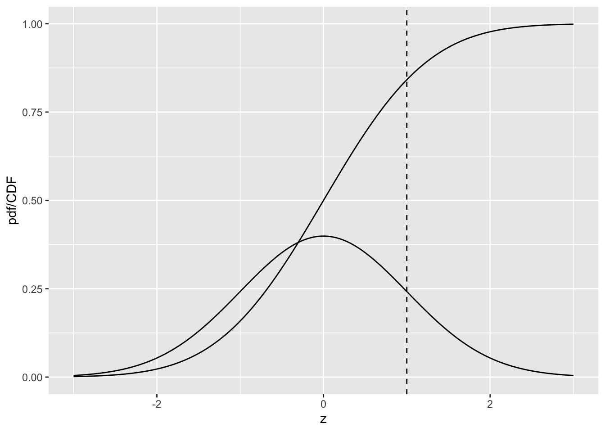

Chapter 4 Modeling the Binary Task
4.1 Introduction
Chapter 02 introduced measures of performance associated with the binary decision task. Described in this chapter is a 2-parameter statistical model for the binary task, in other words it shows how one can predict quantities like sensitivity and specificity based on the values of the parameters of a statistical model. It introduces the fundamental concepts of a decision variable and a decision threshold (the latter is one of the parameters of the statistical model) that pervade this book, and shows how the decision threshold can be altered by varying experimental conditions. The receiver-operating characteristic (ROC) plot is introduced which shows how the dependence of sensitivity and specificity on the decision threshold is exploited by a measure of performance that is independent of decision threshold, namely the area AUC under the ROC curve. AUC turns out to be related to the other parameter of the model.
The dependence of variability of the operating point on the numbers of cases is explored, introducing the concept of random sampling and how the results become more stable with larger numbers of cases, or larger sample sizes. These are perhaps intuitively obvious concepts but it is important to see them demonstrated. Formulae for 95% confidence intervals for estimates of sensitivity and specificity are derived and the calculations are shown explicitly.
4.2 The equal-variance binormal model
- \(N(\mu,\sigma^2)\) is the normal distribution with mean \(\mu\) and variance \(\sigma^2\).
- The Z-samples for non-diseased cases are distributed \(N(0,1)\).
- The Z-samples for diseased cases are distributed \(N(\mu,1)\).
- A case is diagnosed as diseased if its Z-sample \(\geq\) a constant threshold \(\zeta\), and non-diseased otherwise.
4.3 Definitions and relevant formulae
- pdf = probability density function, denoted \(\phi\).
- cdf = cumulative distribution function, denoted \(\Phi\).
\[\begin{equation*} \phi\left ( z|\mu,\sigma \right )=\frac{1}{\sigma\sqrt{2\pi}}\exp\left ( -\frac{(z-\mu)^2}{2\sigma^2} \right ) \end{equation*}\]
\[\begin{equation*} \phi\left ( z \right )=\frac{1}{\sqrt{2\pi}}\exp\left ( -\frac{z^2}{2} \right ) \end{equation*}\]
\[\begin{equation*} \Phi\left ( z \right )=\int_{-\infty }^{z}\phi(t)dt \end{equation*}\]
4.4 The normal distribution pdf and cdf plots
x <- seq(-3,3,0.01)
pdfData <- data.frame(z = x, pdfcdf = dnorm(x))
# plot the CDF
cdfData <- data.frame(z = x, pdfcdf = pnorm(x))
pdfcdfPlot <- ggplot(mapping = aes(x = z, y = pdfcdf)) + geom_line(data = pdfData) + geom_line(data = cdfData) +
geom_vline(xintercept = 1, linetype = 2) + xlab(label = "z") + ylab(label = "pdf/CDF")
print(pdfcdfPlot)
The sigmoid shaped curve is the CDF, or cumulative distribution function, of the N(0,1) distribution, while the bell-shaped curve is the corresponding pdf, or probability density function. The dashed line corresponds to the reporting threshold \(\zeta\). The area under the pdf to the left of \(\zeta\) equals the value of CDF at the selected \(\zeta\), i.e., 0.841 (pnorm(1) = 0.841).
4.5 Binary ratings
# Line 1
# ...
# ...
seed <- 100;set.seed(seed)
K1 <- 9;K2 <- 11;mu <- 1.5;zeta <- mu/2
z1 <- rnorm(K1)
z2 <- rnorm(K2) + mu
nTN <- length(z1[z1 < zeta])
nTP <- length(z2[z2 >= zeta])
Sp <- nTN/K1;Se <- nTP/K2
cat("seed = ", seed, ", K1 = ", K1, ", K2 = ", K2,
"Specificity = ", Sp, ", Sensitivity = ", Se, "\n")
#> seed = 100 , K1 = 9 , K2 = 11 Specificity = 0.8888889 , Sensitivity = 0.9090909Line 4 sets the seed of the random number generator to 100: this causes the random number generator to yield the same sequence of “random” numbers every time it is run. This is useful during initial code development and for showing the various steps of the example (if seed <- NULL the random numbers would be different every time, making it harder for me, from a pedagogical point of view, to illustrate the steps). Line 5 initializes variables K1 and K2, which represent the number of non-diseased cases and the number of diseased cases, respectively. In this example 9 non-diseased and 11 diseased cases are simulated. Line 5 also initializes the parameter mu <- 1.5 (mu corresponds to the separation parameter of the simulation model). Finally, this line initializes zeta, which corresponds to the threshold for declaring cases as diseased, to mu/2, i.e., halfway between the means of the two distributions defining the binormal model. Later one can experiment with other values. [Note that multiple statements can be put on a single line as long as semi-colons separate them. The author prefers the “vertical length” of the program to be short, a personal preference that gives the author a better perspective of the code.]
Line 6 calls the built-in function rnorm() – for random sample(s) from a normal distribution - with argument K1, which yields K1 (9 in our example) samples from a unit normal distribution N(0,1). Arguments to a function are always comma separated and contained within enclosing parentheses. The samples are assigned to the variable z1 (for z-samples for non-diseased cases). The corresponding samples for the diseased cases, line 7, denoted z2, were obtained using rnorm(K2) + mu. [Alternatively one could have used rnorm(K2, mean = mu), which cause the value mu to override the default value - zero - of the mean of the normal distribution.] Since mu was initialized to 1.5, this line yields 11 samples from a normal distribution with mean zero and unit variance and adds 1.5 to all samples (if one wishes to sample from a distribution with a different variance, for example “3”, one needs to also insert the standard deviation argument, e.g., sd = sqrt(3), in the call to rnorm()). The modifications to the default values can be inserted, separated by commas, in any order, but the names mean and sd must match; try typing rnorm(K1, mean1 = 0) in the console window, one should see an error message.
4.6 Calculating confidence intervals for sensitivity and specificity
options(digits=3)
seed <- 100;set.seed(seed)
alpha <- 0.05;K1 <- 99;K2 <- 111;mu <- 5;zeta <- mu/2
cat("alpha = ", alpha, "K1 = ", K1, "K2 = ", K2, "mu = ", mu, "zeta = ", zeta, "\n")
#> alpha = 0.05 K1 = 99 K2 = 111 mu = 5 zeta = 2.5
z1 <- rnorm(K1)
z2 <- rnorm(K2) + mu
nTN <- length(z1[z1 < zeta])
nTP <- length(z2[z2 >= zeta])
Sp <- nTN/K1;Se <- nTP/K2
cat("Specificity = ", Sp, "Sensitivity = ", Se, "\n")
#> Specificity = 0.99 Sensitivity = 0.991
# Approx binomial tests
cat("approx 95% CI on Specificity = ",
-abs(qnorm(alpha/2))*sqrt(Sp*(1-Sp)/K1)+Sp,
+abs(qnorm(alpha/2))*sqrt(Sp*(1-Sp)/K1)+Sp,"\n")
#> approx 95% CI on Specificity = 0.97 1.01
# Exact binomial test
ret <- binom.test(nTN, K1, p = nTN/K1)
cat("Exact 95% CI on Specificity = ", as.numeric(ret$conf.int),"\n")
#> Exact 95% CI on Specificity = 0.945 1
# Approx binomial tests
cat("approx 95% CI on Sensitivity = ",
-abs(qnorm(alpha/2))*sqrt(Se*(1-Se)/K2)+Se,
+abs(qnorm(alpha/2))*sqrt(Se*(1-Se)/K2)+Se,"\n")
#> approx 95% CI on Sensitivity = 0.973 1.01
# Exact binomial test
ret <- binom.test(nTP, K2, p = nTP/K2)
cat("Exact 95% CI on Sensitivity = ", as.numeric(ret$conf.int),"\n")
#> Exact 95% CI on Sensitivity = 0.951 1The lines upto cat("Specificity = ", Sp, "Sensitivity = ", Se, "\\n") are almost identical to those in the previous code chunk. Lines 14-17 calculates the approximate 95% CI for FPF. Note the usage of the absolute value of the qnorm() function; qnorm is the lower quantile function for the unit normal distribution, identical to \(\Phi^{-1}\), and \(z_{\alpha/2}\) is the upper quantile function. Line 19 – 21 calculates and prints the corresponding exact confidence interval, using the function binom.test(); one should look up the documentation on this function for further details (in the Help panel – lower right window - start typing in the function name and RStudio should complete it) and examine the structure of the returned variable ret. The remaining code repeats these calculations for TPF.
The approximate confidence intervals can exceed the allowed ranges, but the exact confidence intervals do not.